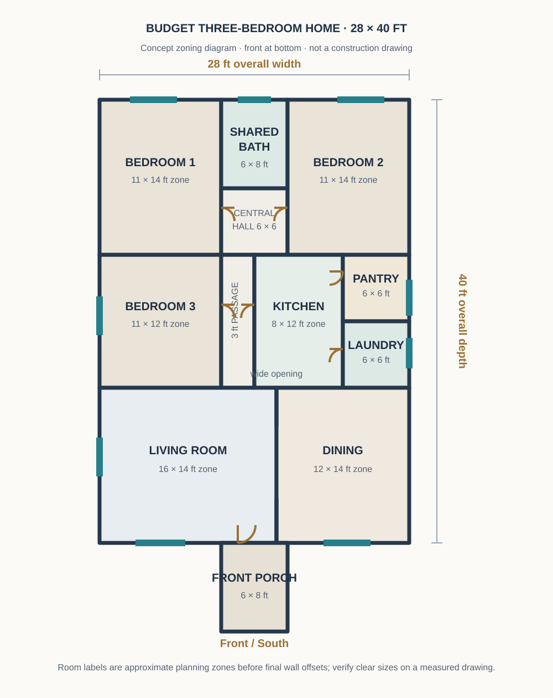
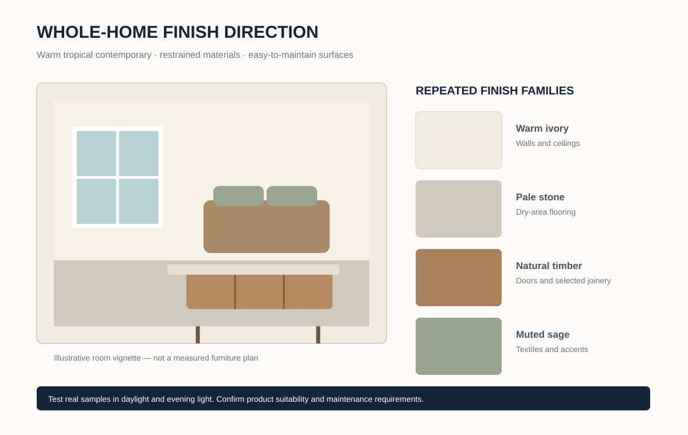
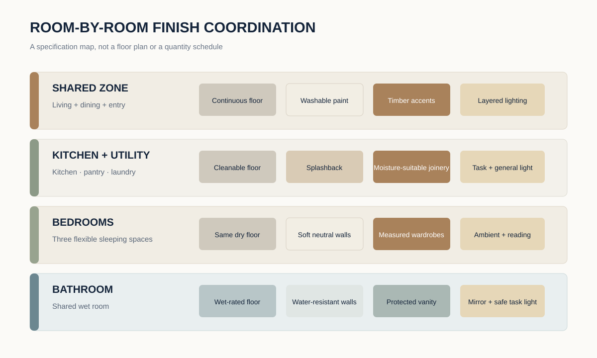
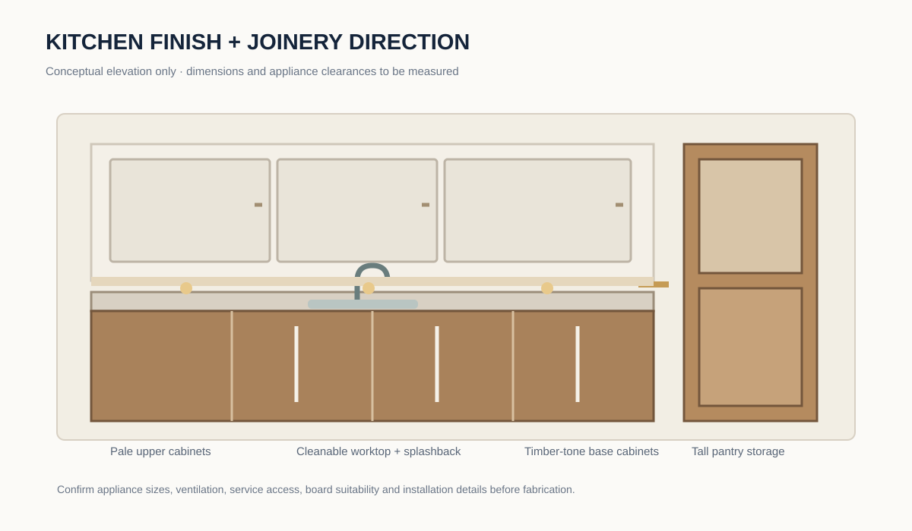
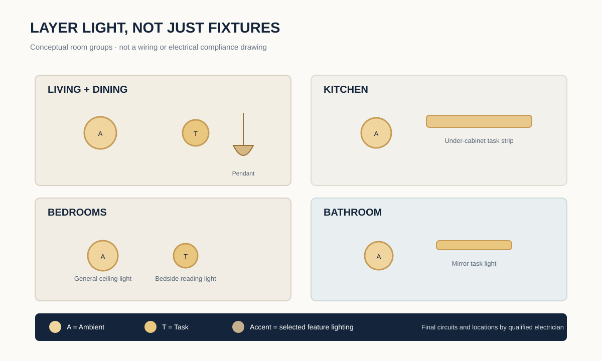

Interiors · Whole-Home Finish Guide · 16 November 2026
A Cohesive Tropical Interior Finish Plan for a 28 × 40-Foot Three-Bedroom Home
A home feels considered when its rooms belong to the same story. This guide develops a practical interior direction for the 28 × 40-foot budget three-bedroom house concept already featured on DreamHome Plans. Instead of designing one room in isolation, it connects the living and dining areas, kitchen, bedrooms, bathroom and utility spaces through a restrained palette, durable finishes, useful storage and coordinated lighting.
1. Start with one clear interior brief
The proposed style is a calm tropical contemporary interior: warm off-white walls, medium natural timber, muted green accents and a quiet stone-like floor finish. It avoids relying on a large number of decorative materials. Repeating a small group of finishes can make a compact home feel connected, simplify purchasing and reduce the number of samples that need approval.
The palette should still respond to the home's real daylight. A north-facing room, a shaded verandah and a room exposed to strong afternoon sun can make the same paint sample look different. Test large sample boards on more than one wall and view them in morning, afternoon and evening light. Do not select a wall colour from a phone screen alone.
Before choosing finishes, write down the household's priorities: children or pets, cooking frequency, wet footwear, storage needs, cleaning routine, allergies or sensitivities, and whether the home will be occupied during the work. These everyday details are more useful than choosing a trend first.
2. Use the floor plan as the interior coordination map

Use the floor plan to identify where flooring changes, wet-area protection, storage and lighting need to be coordinated. In this reference concept, the living and dining areas form the shared front zone; the kitchen, pantry and laundry are grouped as service spaces; and three bedrooms share the quieter part of the plan. The bathroom and kitchen should be reviewed together with the plumbing designer so that pipe routes, access panels and maintenance points are practical.
Do not assume that the labels in a concept drawing are finished internal dimensions. Before ordering tile, cabinets, wardrobes or curtains, obtain a measured schedule that records finished wall-to-wall sizes, ceiling heights, window reveals, door positions and floor levels.
3. The whole-home material palette

Keep the permanent finishes quiet and use replaceable items for stronger colour. A warm neutral floor and wall colour can continue through the shared spaces, while timber tones add warmth to doors, shelves and selected furniture. Muted green can appear in cushions, curtains or one painted cabinet section rather than being applied to every room.
- Walls: Choose a washable interior paint suited to the substrate and local humidity. Use a compatible primer and follow the manufacturer's preparation and curing instructions.
- Dry-area floors: A durable ceramic or porcelain tile, or another locally serviceable finish, can provide continuity. Check slip performance, cleaning requirements, surface texture and replacement availability.
- Wet-area floors: Select a finish specifically suitable for wet use. The final surface, falls, waterproofing system and drain details must be specified and installed by qualified local professionals.
- Timber and wood-look finishes: Use a consistent timber tone for a limited number of visible elements. Confirm that boards, veneers, laminates, edge details and adhesives are suitable for the expected moisture and heat.
- Metal details: Repeat one restrained hardware finish where practical, but choose corrosion resistance appropriate to the location and cleaning products.
- Soft furnishings: Linen-look curtains, washable upholstery covers and a small number of textured cushions soften the neutral base without making maintenance difficult.
4. Room-by-room finish schedule

The schedule below is a design direction rather than a bill of quantities. It tells the designer, contractor and household what each room needs to do. Actual product selections should be made only after site measurements, samples and quotations are reviewed.
| Area | Finish direction | Storage and furniture priorities | Coordination check |
|---|---|---|---|
| Living room | Continuous dry-area floor, washable warm-neutral walls, timber accent | Compact media unit, closed storage for daily items, movable seating | Keep the entrance route and window operation clear |
| Dining area | Same floor as living area; one easy-clean feature surface if desired | Table sized to real chair pull-back space; shallow sideboard | Check the route to kitchen with chairs occupied |
| Kitchen | Cleanable splashback, durable worktop, moisture-suitable cabinet finish | Drawer storage near preparation zone; tall pantry only where it will not block light | Coordinate appliance dimensions, sockets, water and extraction before cabinetry |
| Bedroom 1 | Quiet wall colour, comfortable low-glare lighting, easy-clean floor | Wardrobe, bedside storage and clear bed access | Check wardrobe doors against the bed and window curtains |
| Bedrooms 2 and 3 | Repeat the same wall and floor family for a calm whole-home feel | Flexible desk or study shelf where household needs require it | Locate outlets and lights around the final furniture plan |
| Shared bathroom | Wet-area-rated floor and wall finishes; carefully detailed waterproofing | Mirror cabinet or compact vanity with accessible service space | Confirm ventilation, drainage, falls and safe electrical zones locally |
| Pantry and laundry | Hard-wearing, cleanable surfaces and moisture-tolerant finishes | Adjustable shelves, labelled storage and space for cleaning equipment | Keep valves, traps, filters and appliances accessible for maintenance |
| Passage and entry | Continue the main floor and wall palette | Shallow shoe storage or hooks only where circulation remains clear | Check door swings, lighting and trip-free floor transitions |
5. Living and dining: make the shared zone feel calm
Use the same main floor finish across living and dining to make the front of the home read as one connected space. Define the two activities with furniture, a rug and lighting rather than an unnecessary full-height divider. A sofa with a modest visual profile, a shallow media cabinet and dining chairs that can be moved easily will keep the room adaptable.
Choose a rug only after the sofa and dining furniture have been positioned. The rug should gather the seating group without becoming a trip edge in the main route. If the dining table sits close to a wall or cabinet, check that chairs can be pulled out and that people can pass behind a seated person. Use a durable, cleanable upholstery fabric if the room is used heavily every day.
For the window treatment, combine privacy with daylight control. A light-filtering layer can soften glare during the day, while a second layer can provide privacy after dark. Confirm that curtain tracks, pelmets and curtain stacks do not conflict with the window opening or furniture.
6. Kitchen, pantry and laundry: design for cleaning and service access

In the kitchen, prioritise a worktop that can be cleaned easily, cabinet fronts that tolerate the household's cooking habits and a splashback system that can be maintained. Choose the worktop, sink, tap and cabinet finish as a coordinated set so that joints, edge details and cleaning products are compatible. Do not select a cabinet board or adhesive for a wet location without checking its technical data.
Plan appliance models before finalising cabinets. Refrigerators, cookers, ovens, extractors and dishwashers vary in size and service requirements. Leave the clearances and ventilation openings required by the appliance manufacturer. Keep electrical outlets, water connections and isolation points accessible without placing them where leaks or heat are likely to cause problems.
The pantry should make frequently used ingredients easy to reach. Use adjustable shelves and group heavy items at a comfortable height. In the laundry, provide a dedicated place for detergents, a hanging rail or drying solution where appropriate, and access to taps, traps and valves. Avoid boxing in service points permanently.
7. Bedrooms: consistent finishes, individual storage
Use the same principal floor and wall palette in all three bedrooms. This reduces visual fragmentation and makes future repainting easier. Give each room a different accent only through bedding, a small textile panel, artwork or a modest painted area. Strong feature walls can make a compact room feel visually busy if they compete with wardrobes and curtains.
Measure the bed, bedside tables and wardrobe before fixing the lighting or power points. A sliding wardrobe may help where a hinged door would obstruct a route, but its track and internal drawers still need room to operate. Include a full-height hanging section, shelves and drawers only after the household has reviewed what it actually stores. A shallow open shelf beside a bed can be more useful than a large decorative unit that narrows the walking path.
Provide general lighting and a separate reading or task light. Place switches where they can be reached naturally on entering the room and from the bed, subject to the electrician's design. Avoid positioning a ceiling fitting where a fan, wardrobe door or tall furniture could conflict with it.
8. Bathroom: treat waterproofing and ventilation as a system
A bathroom finish is only as reliable as the substrate preparation, waterproofing, falls, junctions and installation details behind the visible tile. Select compatible products as a system and follow the manufacturer's method. The installer should pay particular attention to corners, pipe penetrations, floor-to-wall junctions and the shower enclosure or screen.
Choose a floor tile intended for wet use and test a sample with water before approving it. A glossy wall tile may be easy to wipe, but it should not automatically be used on a wet floor. Keep the vanity finish suitable for splashes and make sure the mirror, lighting and any storage do not obstruct ventilation or access to plumbing fittings.
Use an operable window, mechanical extraction or a designed combination appropriate to the site. A fan must discharge to a suitable external location rather than simply moving damp air into a ceiling void. Have a qualified electrician specify bathroom electrical fittings and their locations under the applicable local requirements.
9. Lighting and electrical coordination

Think about lighting in three layers:
- Ambient: General ceiling or wall lighting for safe movement and everyday use.
- Task: Focused light for kitchen preparation, reading, study, grooming and laundry work.
- Accent: Gentle light for a shelf, artwork, textured wall or selected architectural feature.
Before cabinetry and ceilings are closed, mark the location of switches, outlets, data points, appliance supplies, fan points and access panels on a coordinated drawing. Confirm the actual appliances and furniture first. The electrician must determine circuit design, protective devices, cable sizing, earthing, wet-area requirements and compliance with local regulations. Do not use this concept diagram to install or alter wiring.
10. A sensible order for interior work
- Measure and freeze the brief: Verify room dimensions, ceiling heights, openings, floor levels and the final furniture list.
- Coordinate hidden services: Resolve plumbing, electrical routes, ventilation, air-conditioning provisions and access panels before closing walls or ceilings.
- Complete wet-area preparation: Prepare substrates, waterproofing and drainage details, then arrange the required inspection or testing before finishes cover the work.
- Install fixed finishes: Complete ceilings, wall preparation, floor finishes, wall tiles and permanent joinery in a sequence agreed with the contractor.
- Paint and fit hardware: Protect finished surfaces, apply the specified coating system and install doors, handles and cabinet hardware.
- Install lighting and appliances: Have the relevant trades connect and test each item, retaining access to service points.
- Bring in movable furniture: Place beds, sofas, tables, curtains and rugs only after dusty work is complete and the room is clean and dry.
- Inspect and record: Photograph concealed services before they are covered where appropriate, collect product details and warranties, and record maintenance instructions.
11. Cost planning without false precision
No reliable interior price can be calculated from a concept article alone. The total depends on the actual measured area, product grade, local availability, transport, labour, waste, site access, taxes, contractor scope and the condition of the existing shell. Prices can vary significantly between locations and suppliers, so obtain current written quotations before setting a budget.
Build a room-by-room schedule with quantities for flooring, skirting, paint, wall tile, splashback, worktop, cabinet fronts, hardware, lighting, sanitary fittings, curtains and furniture. Ask each supplier to state the product, unit, quantity, installation scope, exclusions, delivery and warranty. Keep a separate allowance for preparation, repairs, breakage and changes discovered after opening up the work.
For an international audience, this guide does not publish a single currency estimate. For a Sri Lankan project, request current local quotations in LKR and state the district, quotation date, product specification and whether labour and taxes are included. For projects elsewhere, use the same method with local suppliers and trades.
12. Maintenance and long-term comfort
- Keep spare tiles, paint references and cabinet hardware details in a labelled home-maintenance file.
- Clean floors and worktops with products approved by their manufacturers; harsh cleaners can damage sealers, grout and metal finishes.
- Use exhaust ventilation during and after cooking or showering, and investigate persistent condensation or musty odours rather than covering them with fragrance.
- Check silicone joints, plumbing connections and areas below sinks periodically for movement or leaks.
- Use window coverings and external shading to manage glare and heat before relying on darker paint or heavy curtains.
- Keep access to electrical panels, valves, traps, filters and appliance connections unobstructed.
13. Limitations and professional review
This article provides interior design guidance only. It does not establish structural safety, fire performance, accessibility compliance, waterproofing certification, electrical compliance or plumbing capacity. The floor-plan reference is conceptual and its room allocations must be verified and redrawn before ordering materials. A qualified local architect or building designer should coordinate the interior with the approved building layout. Use appropriately qualified professionals for structural, electrical, plumbing, ventilation and regulatory decisions, and follow the installation instructions for every selected product.
14. Image concepts and accurate alt text
The embedded vector graphics are original explanatory diagrams. They are not photographs, completed-building images or photorealistic renders. If a realistic visual set is commissioned later, keep the same palette and room arrangement across all views.
Prompt: Create a high-resolution editorial interior design board for a compact tropical three-bedroom home, showing warm ivory wall paint, pale stone-look flooring, medium natural timber, muted sage upholstery, restrained charcoal hardware, linen curtain texture and a small coordinated living-dining vignette. Neutral daylight, realistic material samples, no text labels, no people, conceptual material styling only.
Alt text: Interior design board with warm ivory walls, pale stone-look flooring, natural timber, muted sage upholstery and linen textures for a compact tropical home.
Prompt: Photorealistic interior concept of a modest tropical living-dining room with warm neutral walls, durable light flooring, medium timber furniture, muted green fabric accents, shaded windows, ceiling fan and layered warm lighting. Keep the furniture scale modest and circulation visibly clear. This is a proposed design, not a real completed building.
Alt text: Proposed tropical living and dining interior with a compact sofa, timber dining table, neutral finishes and shaded windows.
Prompt: Photorealistic conceptual kitchen elevation for a compact family home, with warm wood-look lower cabinets, light neutral upper cabinets, a cleanable pale worktop, simple tiled splashback, task lighting and clearly accessible appliance zones. Do not show brand logos or claim exact dimensions.
Alt text: Conceptual compact kitchen with warm wood-look base cabinets, pale upper cabinets, a light worktop and under-cabinet task lighting.
Prompt: Calm tropical bedroom interior concept with warm off-white walls, natural timber bed and wardrobe, soft neutral bedding, muted green textile accent, shaded operable window and simple reading lights. Realistic material textures, uncluttered floor, no people, proposed design rather than a photograph.
Alt text: Proposed tropical bedroom with a natural timber bed and wardrobe, neutral bedding, muted green accents and a shaded window.
Related DreamHome Plans guides
- 28 × 40-Foot Budget Three-Bedroom House Plan — the reference home layout used for this interior schedule.
- A Calm Tropical Living–Dining Interior for a 16 × 20-Foot Room — a closer look at furniture grouping and finishes in one shared space.
- Kitchen Layouts — compare work-zone arrangements before finalising cabinetry.
- Bathroom Layouts — review fixture placement and circulation before specifying wet-area finishes.
- Bedroom Layouts — explore bed, wardrobe and study furniture arrangements.
- Modern Homes and 3D Designs — compare broader home concepts and visual planning methods.